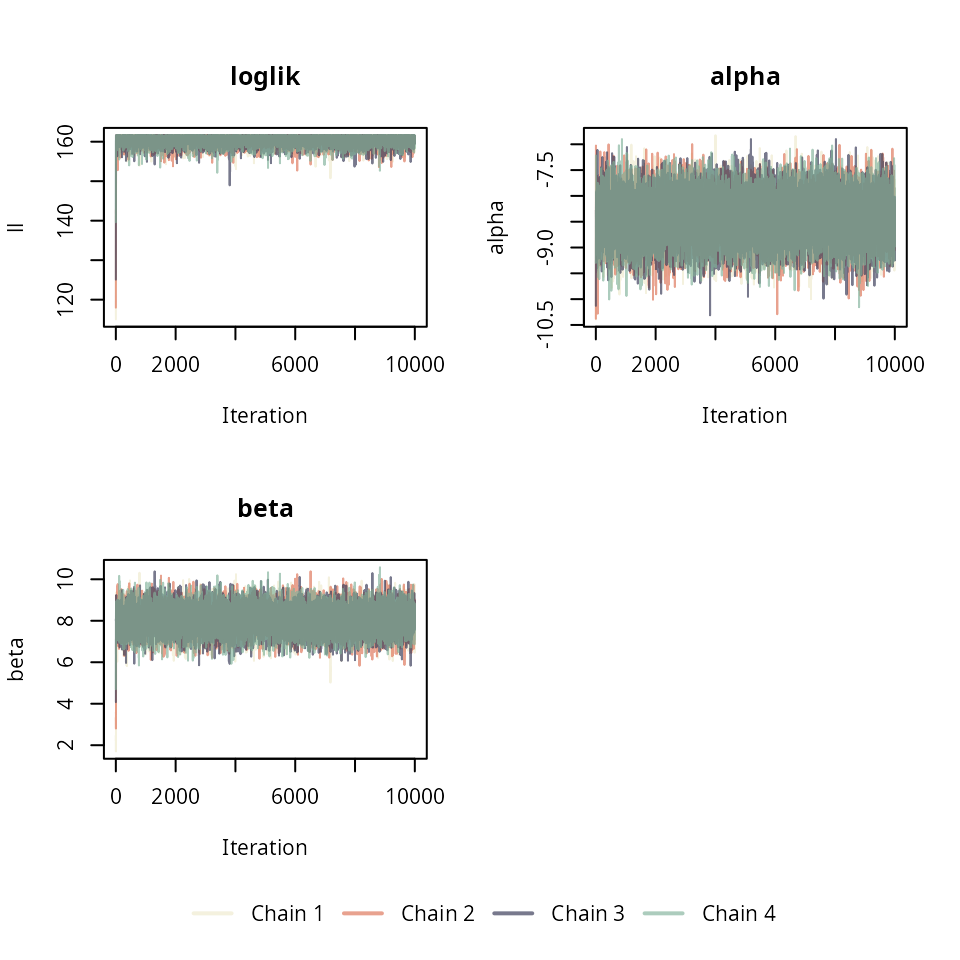
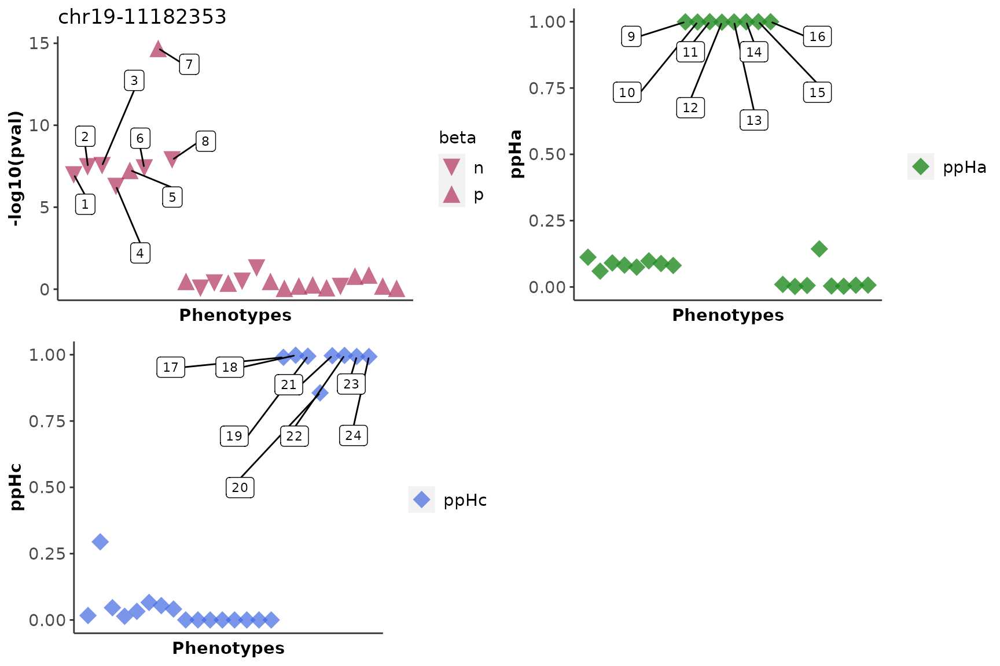

vignettes/HierarchicalPriors_04.Rmd
HierarchicalPriors_04.RmdThe hierarchical model is ideal when a large set of variants and phenotypes are available i.e., a phenome-wide association study with a set of variants which are previously known to have a functional role or have been implicated in a disease. Here we show how to use cophescan to infer hierarchical priors on a small test dataset.
data("cophe_multi_trait_data")
attach(cophe_multi_trait_data)
trait_dat = cophe_multi_trait_data$summ_stat$Trait_1
str(trait_dat)
#> List of 8
#> $ beta : Named num [1:1000] -0.01369 0.01666 0.09057 -0.00571 -0.05606 ...
#> ..- attr(*, "names")= chr [1:1000] "chr19-11173352" "chr19-11173626" "chr19-11173716" "chr19-11173807" ...
#> $ varbeta: Named num [1:1000] 0.000516 0.000399 0.003124 0.000419 0.000473 ...
#> ..- attr(*, "names")= chr [1:1000] "chr19-11173352" "chr19-11173626" "chr19-11173716" "chr19-11173807" ...
#> $ z : Named num [1:1000] -0.603 0.834 1.62 -0.279 -2.578 ...
#> ..- attr(*, "names")= chr [1:1000] "chr19-11173352" "chr19-11173626" "chr19-11173716" "chr19-11173807" ...
#> $ snp : chr [1:1000] "chr19-11173352" "chr19-11173626" "chr19-11173716" "chr19-11173807" ...
#> $ MAF : Named num [1:1000] 0.2614 0.4871 0.0318 0.4046 0.3042 ...
#> ..- attr(*, "names")= chr [1:1000] "chr19-11173352" "chr19-11173626" "chr19-11173716" "chr19-11173807" ...
#> $ type : chr "cc"
#> $ N : num 20000
#> $ s : num 0.5
querysnpid <- cophe_multi_trait_data$querysnpidThe first step is preparing the input for the hierarchical model
which are the log Bayes factors: lBF.Ha and lBF.Hc. We will use
cophe.susie.lbf to extract Bayes factors estimated using
SuSIE. Note: When there are no credible sets identified with SuSIE the
function internally calculates lBF.Ha and lBF.Hc using the Approximate
Bayes Factor method.
## Hide print messages from coloc
res.multi.lbf <- list()
for (trait_idx in seq_along(cophe_multi_trait_data$summ_stat)){
querytrait_ss <- cophe_multi_trait_data$summ_stat[[trait_idx]]
# Here LD is the same
querytrait_ss$LD <- LD
trait_variant_pair <- paste0('Trait', trait_idx, '_', querysnpid)
res.multi.lbf[[trait_variant_pair]] <- cophe.susie.lbf(querytrait_ss, querysnpid = querysnpid, querytrait = paste0('Trait', trait_idx))
}
res.multi.lbf.df = bind_rows(res.multi.lbf)
head(res.multi.lbf.df)
#> lBF.Ha lBF.Hc nsnps querysnp querytrait hit1
#> 1: 15.31003 11.95277 1000 chr19-11182353 Trait1 chr19-11182353
#> 2: 16.43401 13.00673 1000 chr19-11182353 Trait2 chr19-11182353
#> 3: 17.36744 13.13794 1000 chr19-11182353 Trait3 chr19-11182353
#> 4: 14.45423 10.44441 1000 chr19-11182353 Trait4 chr19-11182353
#> 5: 15.82635 12.54912 1000 chr19-11182353 Trait5 chr19-11182353
#> 6: 16.23052 12.88257 1000 chr19-11182353 Trait6 chr19-11182353
#> hit2 typeBF idx1 idx2
#> 1: chr19-11182144 susieBF 1 1
#> 2: chr19-11183133 susieBF 1 1
#> 3: chr19-11189906 susieBF 1 1
#> 4: chr19-11182538 susieBF 1 1
#> 5: chr19-11176397 susieBF 1 1
#> 6: chr19-11182135 susieBF 1 1Note: The output of cophe.susie or
cophe.single can also be used as input to the hierarchical
model as it has all the fields required for the input. This would be
useful when you would like to compare results from the fixed priors to
those obtained from priors inferred using the hierarchical model. [Swap
cophe.susie for cophe.susie.lbf above and
instead of bind_rows do :
res.multi.lbf.df = multitrait.simplify(res.multi.lbf)]
The input df for the multi.dat arguments should contain the following fields: “lBF.Ha”,“lBF.Hc” and “nsnps”.
# covar=F
## Set covar to TRUE to include covariates
covar=T
covar_vec = cophe_multi_trait_data$covar_vec
cophe.hier.res <- run_metrop_priors(res.multi.lbf.df, avg_posterior=T, avg_pik = T, covar_vec = covar_vec, covar = covar, nits = 30000)
#> Running the cophescan hierarchical model...
#> Number of iterations: 30000
#> Burn-in: 1
#> Number of input QV/QT pairs: 24
#> Covariate included: TRUE
names(cophe.hier.res)
#> [1] "ll" "parameters" "avg.posterior" "avg.pik"
#> [5] "data" "nits" "thin" "covar_vec"Note: Setting posterior or pik to TRUE is memory intensive for very large datasets
loglik <- cophe.hier.res$ll
parameters <- cophe.hier.res$parameters
col <- rgb(red = 0.4, green = 0.7, blue = 0.5, alpha = 0.8)
par(mfrow=c(2,2))
plot(1:length(loglik), loglik, main="loglik",type="l", col=col, ylab = "ll", xlab="")
plot(1:ncol(parameters), parameters[1,], main="alpha",type="l", col=col, ylab = "alpha", xlab="")
plot(1:ncol(parameters), parameters[2,], main="beta",type="l", col=col, ylab = "beta", xlab="")
if (covar == T)
plot(1:ncol(parameters), parameters[3,], main="gamma",type="l", col=col, ylab = "gamma", xlab="")
cophe.hier.res$avg.posterior contains the posterior
probabilities of the hypotheses : \(H_n\), \(H_a\) and \(H_c\) for the queryvariant/querytraut pairs
obtained from the hierarchical model.
res.post.prob = cbind(cophe.hier.res$avg.posterior, cophe.hier.res$data)
res.hier.predict <- cophe.hyp.predict(as.data.frame(res.post.prob ))
#> [1] "Hc.cutoff = 0.6"
#> [1] "Hn.cutoff = 0.2"
knitr::kable(res.post.prob, row.names = F, digits=3)| PP.Hn | PP.Ha | PP.Hc | lBF.Ha | lBF.Hc | nsnps | querysnp | querytrait | hit1 | hit2 | typeBF | idx1 | idx2 | sus_labels |
|---|---|---|---|---|---|---|---|---|---|---|---|---|---|
| 0.000 | 0.009 | 0.991 | 15.310 | 11.953 | 1000 | chr19-11182353 | Trait1 | chr19-11182353 | chr19-11182144 | susieBF | 1 | 1 | Trait1_chr19-11182353_hit_chr19-11182144 |
| 0.000 | 0.002 | 0.998 | 16.434 | 13.007 | 1000 | chr19-11182353 | Trait2 | chr19-11182353 | chr19-11183133 | susieBF | 1 | 1 | Trait2_chr19-11182353_hit_chr19-11183133 |
| 0.000 | 0.006 | 0.994 | 17.367 | 13.138 | 1000 | chr19-11182353 | Trait3 | chr19-11182353 | chr19-11189906 | susieBF | 1 | 1 | Trait3_chr19-11182353_hit_chr19-11189906 |
| 0.000 | 0.126 | 0.874 | 14.454 | 10.444 | 1000 | chr19-11182353 | Trait4 | chr19-11182353 | chr19-11182538 | susieBF | 1 | 1 | Trait4_chr19-11182353_hit_chr19-11182538 |
| 0.000 | 0.004 | 0.996 | 15.826 | 12.549 | 1000 | chr19-11182353 | Trait5 | chr19-11182353 | chr19-11176397 | susieBF | 1 | 1 | Trait5_chr19-11182353_hit_chr19-11176397 |
| 0.000 | 0.003 | 0.997 | 16.231 | 12.883 | 1000 | chr19-11182353 | Trait6 | chr19-11182353 | chr19-11182135 | susieBF | 1 | 1 | Trait6_chr19-11182353_hit_chr19-11182135 |
| 0.000 | 0.006 | 0.994 | 31.880 | 28.847 | 1000 | chr19-11182353 | Trait7 | chr19-11182353 | chr19-11180916 | susieBF | 1 | 1 | Trait7_chr19-11182353_hit_chr19-11180916 |
| 0.000 | 0.007 | 0.993 | 17.096 | 13.571 | 1000 | chr19-11182353 | Trait8 | chr19-11182353 | chr19-11180916 | susieBF | 1 | 1 | Trait8_chr19-11182353_hit_chr19-11180916 |
| 0.000 | 0.999 | 0.000 | 16.432 | -1.258 | 1000 | chr19-11182353 | Trait9 | chr19-11182353 | chr19-11248290 | susieBF | 1 | 1 | Trait9_chr19-11182353_hit_chr19-11248290 |
| 0.001 | 0.999 | 0.000 | 15.470 | -1.667 | 1000 | chr19-11182353 | Trait10 | chr19-11182353 | chr19-11267263 | susieBF | 1 | 1 | Trait10_chr19-11182353_hit_chr19-11267263 |
| 0.000 | 1.000 | 0.000 | 22.573 | -1.562 | 1000 | chr19-11182353 | Trait11 | chr19-11182353 | chr19-11254605 | susieBF | 1 | 1 | Trait11_chr19-11182353_hit_chr19-11254605 |
| 0.002 | 0.998 | 0.000 | 14.952 | -1.332 | 1000 | chr19-11182353 | Trait12 | chr19-11182353 | chr19-11256677 | susieBF | 1 | 1 | Trait12_chr19-11182353_hit_chr19-11256677 |
| 0.001 | 0.999 | 0.000 | 15.774 | -1.222 | 1000 | chr19-11182353 | Trait13 | chr19-11182353 | chr19-11267299 | susieBF | 1 | 1 | Trait13_chr19-11182353_hit_chr19-11267299 |
| 0.001 | 0.999 | 0.000 | 16.132 | 0.163 | 1000 | chr19-11182353 | Trait14 | chr19-11182353 | chr19-11269041 | susieBF | 1 | 1 | Trait14_chr19-11182353_hit_chr19-11269041 |
| 0.000 | 1.000 | 0.000 | 18.868 | -1.383 | 1000 | chr19-11182353 | Trait15 | chr19-11182353 | chr19-11256677 | susieBF | 1 | 1 | Trait15_chr19-11182353_hit_chr19-11256677 |
| 0.000 | 1.000 | 0.000 | 17.282 | -1.718 | 1000 | chr19-11182353 | Trait16 | chr19-11182353 | chr19-11271299 | susieBF | 1 | 1 | Trait16_chr19-11182353_hit_chr19-11271299 |
| 0.871 | 0.110 | 0.019 | 6.318 | -1.510 | 1000 | chr19-11182353 | Trait17 | NA | NA | ABF | NA | NA | Trait17_NA_hit_NA |
| 0.656 | 0.060 | 0.284 | 5.982 | -1.462 | 1000 | chr19-11182353 | Trait18 | NA | NA | ABF | NA | NA | Trait18_NA_hit_NA |
| 0.862 | 0.089 | 0.049 | 6.110 | -1.618 | 1000 | chr19-11182353 | Trait19 | NA | NA | ABF | NA | NA | Trait19_NA_hit_NA |
| 0.903 | 0.081 | 0.016 | 5.965 | -1.559 | 1000 | chr19-11182353 | Trait20 | NA | NA | ABF | NA | NA | Trait20_NA_hit_NA |
| 0.890 | 0.073 | 0.036 | 5.879 | -0.707 | 1000 | chr19-11182353 | Trait21 | NA | NA | ABF | NA | NA | Trait21_NA_hit_NA |
| 0.832 | 0.096 | 0.072 | 6.226 | -0.584 | 1000 | chr19-11182353 | Trait22 | NA | NA | ABF | NA | NA | Trait22_NA_hit_NA |
| 0.856 | 0.087 | 0.057 | 6.091 | -1.522 | 1000 | chr19-11182353 | Trait23 | NA | NA | ABF | NA | NA | Trait23_NA_hit_NA |
| 0.877 | 0.080 | 0.044 | 5.978 | -1.627 | 1000 | chr19-11182353 | Trait24 | NA | NA | ABF | NA | NA | Trait24_NA_hit_NA |
Use the cophe_plot function to return -log10(pval), ppHa
and ppHc PheWAS plots from the cophescan output
res.plots = cophe_plot(res.hier.predict, traits.dat = cophe_multi_trait_data$summ_stat, querysnpid = querysnpid, pheno_names = paste0('Trait', 1:30))
if ("ggpubr" %in% rownames(installed.packages())) {
ggpubr::ggarrange(res.plots$pval, res.plots$ppHa, res.plots$ppHc, ncol = 2, nrow = 2)
} 